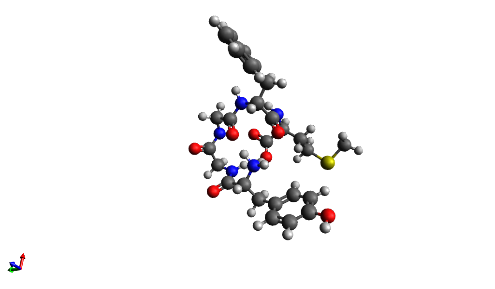

Computational Exercise 2
Structure optimization with Avogadro
by: Ken Newcomb
Due Date: 02.20.15
Q1. What is the optimum phenyl-phenyl dihedral angle in biphenyl? What is the experimental value? How was the experimental value derived? Why might yours differ? Why did you get different results when you started the calculation from the planar biphenyl vs. 90 degree biphenyl? Which optimized structure is correct?
A1. The optimum phenyl-phenyl dihedral angle that I achieved using Avogadro was 54 degrees. In a paper in the Journal of Chemical Theory and Computation, "Torsional Barriers and Equilibrium Angle of Biphenyl: Reconciling Theory with Experiment", the dihedral angle was listed as 44.4 degrees. This value was derived from electron diffraction techniques. My value differs because it is based on a force field, which inherently is an approximation of the true forces each atom experiences. Difference force fields will yield different dihedral angles. In addition, if you start the energy minimization at ~ 90 degrees, the minimizer will get caught in a local minimum. Neither optimized structure is truly correct, since we can never know the true global minimum without sampling the entire configurational space. However, the 54 degree dihedral angle more closely matches the experimental value.
Q2. When you find a low-energy structure for the capped alanine, what chemical interactions were stabilizing the structure? What is a Ramachandran plot? What do your values of phi and psi correspond to on the Ramachandran plot?
A2. To find the structure associated with the globally minimum energy, steric hindrances were first minimized. In addition, hydrogen bonding between the carbonyl and amine groups is favorable and contributes to the minimum energy state. According to Wikipedia, a Ramachandran plot is a method of comparing two protein backbone dihedral angles, psi and phi. In the capped alanine structure, angle psi is 168.7 degrees, while angle phi is 21.9 degrees.
Q3. In this problem, the goal is to compute the lowest energy structure for the pentapeptide met-enkephalin, whose sequence is Tyr-Gly-Gly-Phe-Met. Met-enkephalin is an opioid peptide neurotransmitter. Many local minima exist for this molecule, so it is a challenge to reach the global minimum.
A3. Protein structure optimization is not a trivial task. Proteins are polymers of amino acids, each with a different "side chain". Proteins can be extremely large molecules and can "fold" in 3-dimensional space to minimize the free energy. In nature, proteins find their globally minimum energy state. Computationally, this is a difficult task because for any given protein, there are is an enormous amount of local minima that the protein can find. Standard minimization methods, like steepest descent and conjugate gradients, only guarantee a local minimum.
To minimize the energy of the Tyr-Gly-Gly-Phe-Met peptide using Avogadro, several tactics were employed. Firstly, I recognized that there is a strong, long-range interaction between the positively charged NH3+ terminus and the negatively charged COO- terminus that could not be neglected. Secondly, there were many opportunities for hydrogen bonding between carbonyl carbons and amine hydrogens. Lastly, steric hindrance between particularly large groups was minimized. Below is a picture of my optimized peptide.

The lowest energy that was achieved was -13.9 kJ/mol. This is certainly not the global minimum(which would be very difficult to verify), but is a satisfactory attempt. You can download the Cartesian coordinate file below by clicking here.